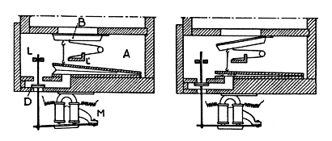
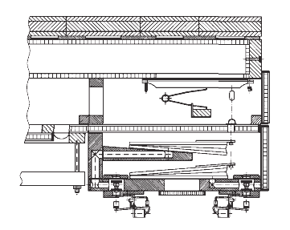
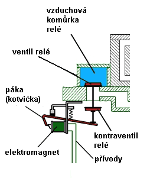
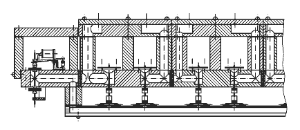
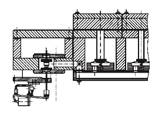

1. elektropneumatická tónová trakturaHrací traktura, nazıvaná rovnì� tónová nebo manuálová èi pedálová je systém (soustava) prvkù, pøevádìjících pohyb klávesy stisknuté varhaníkem na pohyb ventilù vpouštìjících stlaèenı vzduch do píš�al, umístìnıch na vzdušnici. Elektropneumatická hrací traktura je tedy systém elektrickıch a pneumatickıch komponentù, které pomocí el. proudu a stlaèeného vzduchu pøenášejí pohyb klávesy na pohyb tónového ventilu ve vzdušnici. Pou�ité elementy a principy vycházejí z obou typù traktur a jsou popsány zvláš� v pøíslušnıch kapitolách o pneumatické traktuøe a elektrické traktuøe. Pøi kombinaci obou traktur potøebujeme navíc jen jeden prvek, situovanı v místì jejich styku – pøevodník impulsù elektrickıch na pneumatické (èi obrácenì).
|
Vyu�ití elektropneumatické traktury je v nìkterıch
pøípadech levnìjší, ne� stavba èi oprava traktury pneumatické. Zvláštì
u velkıch a rozlehlıch nástrojù se vzdálenım hracím stolem, u kterého
by bylo nutné stavìt vícestupòovou pneumatiku se navíc projeví i další
efekt – na rozdíl od pneumatiky je zpo�dìní u elektrické traktury prakticky
nulové (rychlost šíøení elektrického impulsu se blí�í rychlosti svìtla).
Nezanedbatelné je v tomto pøípadì i zjednodušení (ni�ší poèet komponentù)
a tím i ni�ší poruchovost. Jak vypadá nahrazení slo�itìjší pneumatické
traktury elektrickou pøibli�uje následující animace: |
Všimnìme si na animaci zámìny typu hracího stolu a úpravy relé ve vzdušnici. Kromì vımìny rourek za elektrické vodièe je patrné i vypuštìní dvou dodateènıch mezirelé, které byly nutné pro korektní pøenos pneumatického impulsu na velkou vzdálenost (dùvody pou�ití tìchto relé jsou uvedeny v kapitole komponenty pneumatické traktury). Pøi zachování funkce celé traktury dojde k jejímu zjednodušení (elektrické impulsy lze pøi zachování zásad konstrukce elektrickıch obvodù pøenášet bez podstatnıch ztrát a zkreslení èi nutnosti pou�ití dalších relé na podstatnì vìtší vzdálenosti ne� pneumatické) a dokonce k èásteènému zlepšení jejich vlastností. Od relé ve vzdušnici se u� pøenos impulsu dìje èistì pneumatickou cestou.
|

Funkce této traktury je názornì ukázána na následující
animaci obdobného uspoøádání (typ ventilu i vzdušnice jsou shodné, liší
se jen tvar pou�itého elektromagnetu, jeho funkce je ale tatá�): |
Stisk klávesy zpùsobí sepnutí s ní svázanıch kontaktù a uzavøení elektrického
obvodu, napájejícího elektromagnet pod vzdušnicí. Tento elektromagnet
je posledním (akèním) elektrickım èlenem v této traktuøe (uspoøádání
traktury je tak velmi jednoduché ve srovnání napø. s èistì pneumatickou
trakturou). Tento magnet pohybuje ku�elkou ventilu (v tomto bodì zaèíná
pneumatická èást traktury), kterı øídí tok stlaèeného vzduchu do vıpustného
(vyprazdòovaného) míšku ve ventilové komoøe. Sepnutı elektromagnet nadzvedne
páèkou ku�elku ventilu, ten vypustí vzduch z míšku, kterı díky vnìjšímu
pøetlaku splaskne. Jeho horní deska je táhlem spojena s tónovım ventilem.
Pohyb této desky dolù otevøe tónovı ventil a píš�aly na pøíslušné tónové
kancele mohou znít. I u tohoto øešení traktury se vyskytuje stejnı problém, kterı u� byl popsán v kapitole o pneumatické traktuøe – pohyb míškù pøímo ve ventilové komoøe v ní zpùsobuje mírné kolísání tlaku vzduchu, které by se mohlo projevit zmìnou vıšky tónu u� znìjících píš�al jinıch tónù. Proto se míšky umís�ují do oddìleného prostoru s vlastním pøívodem vzduchu a s ventily jsou spojeny delšími táhly, utìsnìnımi napø. pulpetami: |

Øešení, pøedstavené vıše je pouze jedním z mnoha
mo�nıch pøíkladù spolupráce tónové vzdušnice s elektropneumatickou trakturou.
Stejnì tak i následující animace ukazuje jen jednu z mnoha mo�ností spojení
rejstøíkové (ku�elkové) vzdušnice s elektropneumatickou trakturou: |
|
Pøes rùznorodost konstrukèních provedení je funkce tìchto zaøízení shodná – stisk klávesy zpùsobí uzavøení elektrického obvodu, zapracuje elektromagnet relé a pøenese impuls do pneumatické èásti traktury. Otevøenı ventil v relé vpustí vzduch do konduktu s míšky. Všechny míšky pøipevnìné ke konduktu se nadmou, nadzvednou ku�elky tónovıch ventilù ve vzdušnici a vpustí vzduch k píš�alám zapnutıch rejstøíkù, které zazní. Pøechod systému traktury do klidového stavu probíhá v poøadí – uvolnìní klávesy rozepne kontakt a rozpojí elektrickı obvod, kotva elektromagnetu odpadne, ku�elka ventilu v relé poklesne, vzduch z konduktu a míšku unikne kontraventilem, míšky splasknou a jimi nadzdvi�ené ku�elky se vrátí do spodní polohy, uzavírající pøívod vzduchu z kancely do píš�al. Tón pøestane znít. |
 |
Na následující fotografii je pohled na vzdušnici
tohoto uspoøádání zespodu (varhany v opavské
Konkatedrále): |
U varhan, konstruovanıch pøímo jako elektropneumatické,
se mù�eme setkat s mírnì odlišnım uspoøádáním relé – elektromagnet je
zabudován pøímo ve vzduchovém kanálu vzdušnice: |

Funkce je i pøi odlišném uspoøádání elementù shodná
s vıše uvedenımi pøíklady – sepnutí elektromagnetu otevøe ventil relé
a vpustí vzduch do konduktu s míšky… |
|  | Další mo�né uspoøádání ukazuje
tato ilustrace – spojení elektropneumatické traktury s vıpustkovou membránovou
(rejstøíkovou) vzdušnicí. Je-li elektromagnet v klidu, vzduch naplòuje
kondukt a s ním spojené membrány (míšky, jejich� horní ploténka tvoøí
ventil). Sepnutí elektromagnetu nadzvedne ku�elku ventilu, vzduch z konduktu
unikne do okolí (vıpustnı systém jeho� bli�ší popis najdete v kapitole
o elementech pneumatické traktury).
Membrány poklesnou a píš�aly zapnutıch rejstøíkù (v jejich� kancelách
je vpuštìn rejstøíkovım ventilem stlaèenı vzduch) mohou zaznít. |
2. Pneumaticko - mechanická tónová traktura.Samostatnım typem kombinované hrací traktury (a historicky nejstarším) je pneumaticko-mechanická traktura, nazıvaná dle svého objevitele Barkerova páka (pneumatickı stroj). Její popis naleznete na samostatné stránce zde: |
Na souvisejících stránkách jsou popsány nejèastìji
pou�ívané komponenty smíšené
traktury, rejstøíková
traktura a Barkerova
páka. |
Poznámka: Tato stránka je souèástí Anatomie varhan ®, © Ing. Petr Bernat. Všechny animace © Konrad Zacharski